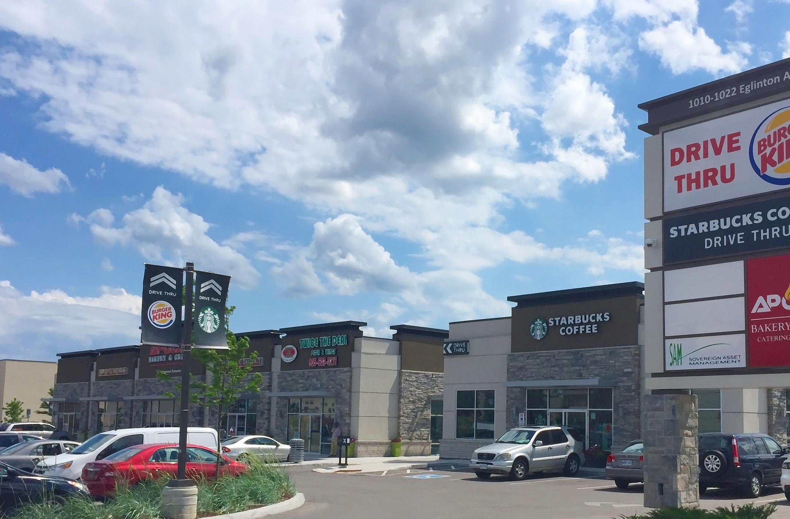

Home
About
Team
Case Studies
Investor Relations
Case Studies
685 Queenston Road
4 High Street
480 Bayfield Street
685 Queenston Road, Hamilton

Investment Thesis
685 Queenston Road is a new 38,000 ft2 specialty grocery store located in the Stoney Creek area of Hamilton.
Originally operating as a car dealership, the 2.5 acre site was purchased and redeveloped as a specialty grocery store.
Outcome
Lease secured with anchor tenant, high end grocery chain Starsky’s.
Date of Acquisition: June 2012
Purchase price: $7.5 MM
Occupancy: Raw Land
NOI: Nil
Lease term: Nil
Operating Performance
IRR: 27.2%
NOI: $550,000
Unlevered Yield: 7.3%
Today
Value: $10.5 MM
Cap Rate: 5.7%
Occupancy: 100%
Lease term: 5 years
4 High Street, Collingwood
Investment Thesis
Shadow anchored by a Metro grocery store and adjacent Home Depot
Located in the major retail node of Collingwood Ontario
Outcome
Lease secured with Dollar Tree, Tim Horton’s, Little Caesers, and Sport Clips
Utilized our vertically integrated management team to design and construct the 12,000 ft development
Produces a stabilized NOI of approximately $240,000 per annum
Date of Acquisition: June 2012
Purchase price: $3.2 MM
Occupancy: Vacant Land
NOI: Nil
Lease term: Nil
Operating Performance
IRR: 18.0%
NOI: $240,000
Unlevered Yield: 7.5%
Today
Value: $4.3 MM
Cap Rate: 5.6%
Occupancy: 100%
Lease term: 5.3 years
480 Bayfield Street, Barrie
Investment Thesis
Remediated 0.7 acre site purchased from Suncor
Shadow anchored by Walmart and a regional shopping centre
Property was redeveloped as a multi tenant shopping centre anchored by Starbucks, Sally Beauty and Pro Oil Change
Outcome
Leveraged our R/E network relationships to secure national tenancies
Utilized our vertically integrated management team to design and construct the 7,000 ft development
Produces a stabilized NOI of approximately $240,000 per annum
Date of Acquisition: June 2012
Purchase price: $3.1 MM
Occupancy: Suncor
NOI: Nil
Lease term: Nil
Operating Performance
IRR: 16.9%
NOI: $240,000
Unlevered Yield: 7.8%
Today
Value: $4.2 MM
Cap Rate: 5.7%
Occupancy: 100%
Lease term: 5 years